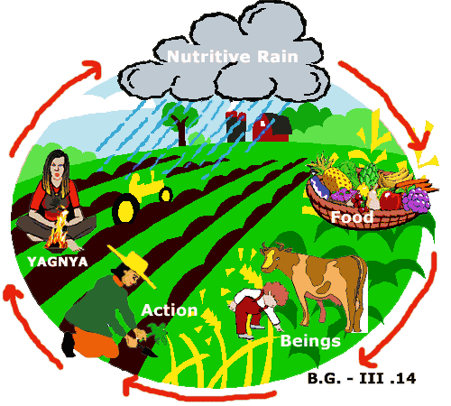
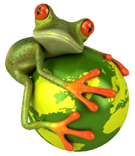

Biodiversity:What is it,where is it,why is it important?

Biodiversity is the measure of the number, variety and variability of livings organisms. It includes diversity within species, between species,
and among ecosystems. The concept also covers how this diversity changes from one location to another and over time. Indicators such as the
number of species in a given area can help in monitoring certain aspects of biodiversity.
Three levels of biodiversity are commonly discussed-
Genetic diversity is all the different genes contained in all the living species,including individual
plants, animals, fungi and microorganisms.
Species diversity is all the different species, as well as the differences within and between different species.
Ecosystem diversity is all the different habitats, biological communities and ecological processes, as well as variation within individual
ecosystems.
Where is it?...
Biodiversity is everywhere, both on land and in water. It includes all organisms, from microscopic bacteria to more complex plants and animals.
Current inverntories of species, though useful, remain incomplete and insufficient for providing an accurate picture of the extent and
distribution of all componets of biodiversity. Based on present knowledge of how biodiversity changes over time, rough estimates can be made of the
rates at which species become extinct.
Why is it important?...

Biodiversity plays an important role in the way ecosystems function and in the many services they provide.Biodiversity has a number importance of
biodiversity on the Earth.These are as follows:
Maintaining balance of the ecosystem:
Recycling and storage of nutrients, combating pollution, and stabillizing climate, protecting water resources, forming and
protecting soil and maintaining ecobalance.
Provision of biological resources:
Provision of medicines and pharmaceuticals, food for the human population and animals, ornamental plants, wood products, breeding
stock and diversity of species, ecosystems and genes.
Social benefits:
Recreation and tourism, culural value and education and research.
The role of biodiversity in the following areas will help make clear the importance of biodiversity in human life.
Biodiversity and food:
80% of human food supply comes from 20 kinds of plants.But humans use 40,000 species for food, clothing and shelter.Biodiversity
provides for variety of foods for the planet.
Biodiversity and human health:
The shortage of drinking water is expected to create a major global crisis.Biodiversity also plays an important role in drug
discovery and medicinal resources. Medicines from nature account for usage by 80% of the world's population.
Biodiversity and industry:
Biological sources provide many industrial materials. These include fiber, oil, dyes, rubber, water, timber,paper and food.
Biodiversity and culture:
Biodiversity enhances recreational activities like bird watching, fishing, trekking etc.It inspires musicians and artists.